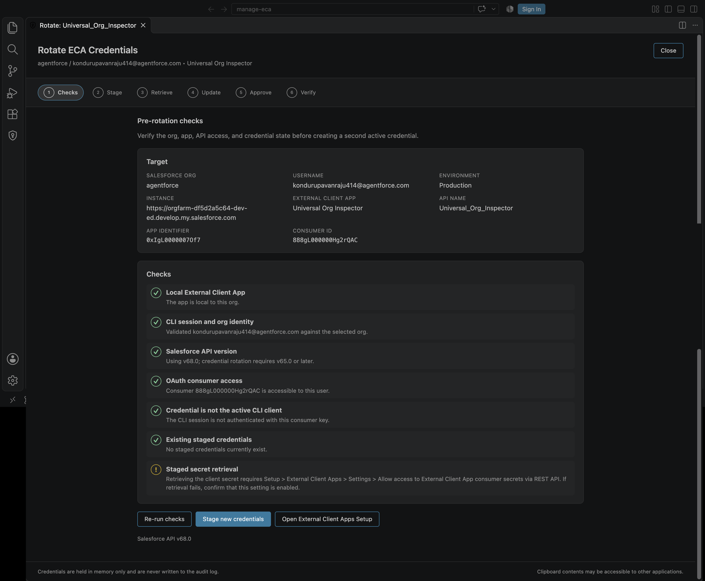

1
Checks
Confirm the target before anything is created.
The wizard opens on a read-only summary of the org and app, followed by preflight checks. Nothing has been staged or changed at this point.
- Target — org alias, username, environment, instance URL, ECA display name, API name, identifier, and consumer ID.
- Passing checks — local app, CLI session and org identity, API version v65+, OAuth consumer access.
- CLI session check — blocks rotation when the CLI session is authenticated with the same client you are about to rotate.
- Staged credential check — lists any credential already staged for this consumer.
- Warning — reminds you that secret retrieval needs the REST setting enabled in Setup.
Stage new credentials stays disabled until every blocking check passes. Warnings are informational and do not block staging.
